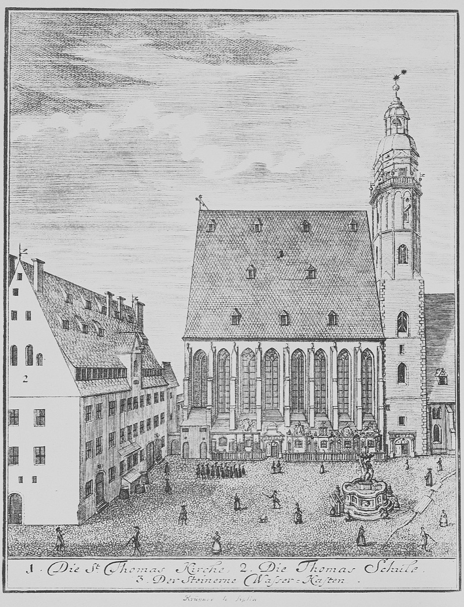

Farewell to Cöthen

Of all Bach's departures — and this timeline records some spectacular ones — the leaving of Cöthen is the only one conducted, on both sides, with grace. Prince Leopold, whose cooling attention and cooling budget had set the exit in motion, did not repeat the Weimar duke's performance: no obstruction, no wounded sovereignty, no jail. He released his Kapellmeister freely, and added a parting gift whose value Bach understood better than anyone: the title itself. Bach would remain Kapellmeister von Haus aus to the court of Anhalt-Cöthen — a Kapellmeister "from home," retained in absentia — which meant that the new cantor of Leipzig could continue signing himself as a prince's officer. Bach collected such honorifics deliberately, the way a lawyer collects bar admissions, and deployed them for the rest of his life as armor in civic disputes; a town council thinks twice before bullying a man with a reigning prince in his signature.
The move itself entered the record through a Leipzig chronicler with a gift for logistics. On the twenty-second of May, 1723, he noted, two carriages arrived at the Thomasschule bearing the family of the new cantor — Johann Sebastian, Anna Magdalena, pregnant that year with her first child, and the four children of Maria Barbara, aged seven to fourteen — followed by four wagons loaded with their household goods. Four wagons was a substantial train; somewhere in it rode one of the great private music libraries of Germany, the instruments, and the working capital of the family firm. The school's renovation crews were still finishing the cantor's apartment around them as they unpacked. Eight days later, on the first Sunday after Trinity, Bach mounted his inaugural cantata — fourteen movements, twice the customary length, a statement of intent aimed at a city that had ranked him third — and the most furious sustained production in the history of composition began on schedule.
The Cöthen story needed one more chapter, and it is the tenderest in the whole employment history. Leopold died in November 1728, thirty-three years old, his health never strong and his little principality's golden decade closing with him. The following March, Bach returned to Cöthen with Anna Magdalena and a body of Leipzig musicians to perform the funeral music for his old prince. The score of that music is lost, but its text survives, and the text betrays its source: the music was drawn, movement after movement, from the St. Matthew Passion — then months from its own Leipzig performances, the deepest music its composer had. Set aside, for once, the scholarly framing of parody technique and hear what the choice meant. For the one employer who had "both loved and knew music," the man who had waited out a duke's jail to hire him, stood godfather to his son, and let him go with a title in his hand, Bach reached into the greatest thing he had ever made and laid it on the coffin. No document records his feelings. The borrowing records them.
So the era closes with its themes gathered: the dignity of a title carried forward, the one warm patronage of a working life honorably ended, and the family firm rolling north in four wagons toward its final, longest, most quarrelsome, most productive posting. The golden age of instruments was over; the age of the great sacred cycles — and of the council that never knew what it had hired — was eight days away.
The era essay gathers the whole six years: Cöthen — the instrumental golden age. The story continues in Leipzig I: the cantata machine.
Leipzig chronicles on the Bachs' arrival, May 1723 (New Bach Reader)
Wolff, The Learned Musician, chs. 7–8
→ full bibliography & links